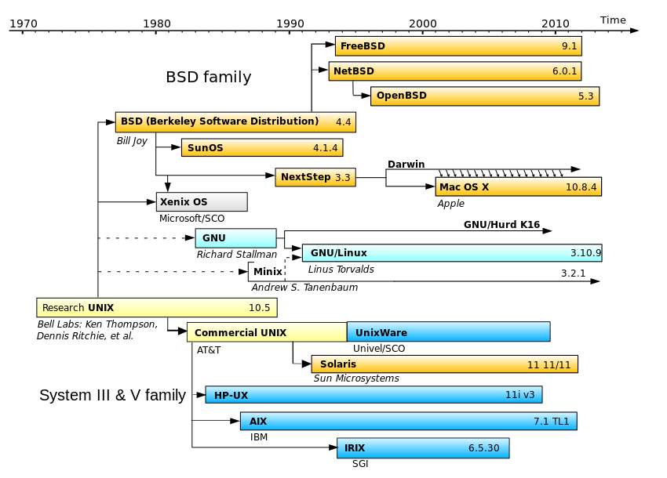

https://stallman.org/
* GNU Hurd * GNU Emacs

https://github.com/torvalds
* linux kernel * git
* Vim * Emacs * Gedit
* Python Django * Ruby on Rails
Power ON
|
POST/BIOS
CD-ROM/HDD
MBR
GRUB/LILO - Boot loader
Kernel
init - Mother of all processes
Run-levels
(Ref: www.tldp.org)
User application
GNU C Library(`glibc`)
API- System call interface
Hardware dependent kernel code
Hardware
(Courtesy: ibm.com)
/- |-/root |-/home | |-/sachin | |-/roy | |.. |-/etc |-/var | |-/log |-/proc |-/mnt |-/usr | |-/local | |-/bin | |-/share | |-/src | |.. |-/bin |-/sbin |-/opt
/dev/sr0 /dev/sda |-/sda1 |-/sda2 |-/sda3 |-/sda4 /dev/sdb |-/sdb1 /dev/sdc
/mnt/cdrom /mnt/flash
ncurses
* Boot from CD/USB * Partition the HDD * Install
* Back your data(I'm not responsible for data loss) * Choose the right disk to partition * Choose filesystem type * Spare some `swap` space
* /boot (where bootloader resides) * / (root partition) * /root (place where root user's data resides. root's home) * /home (users home) * `swap`
regex
/